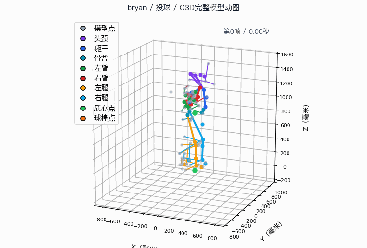
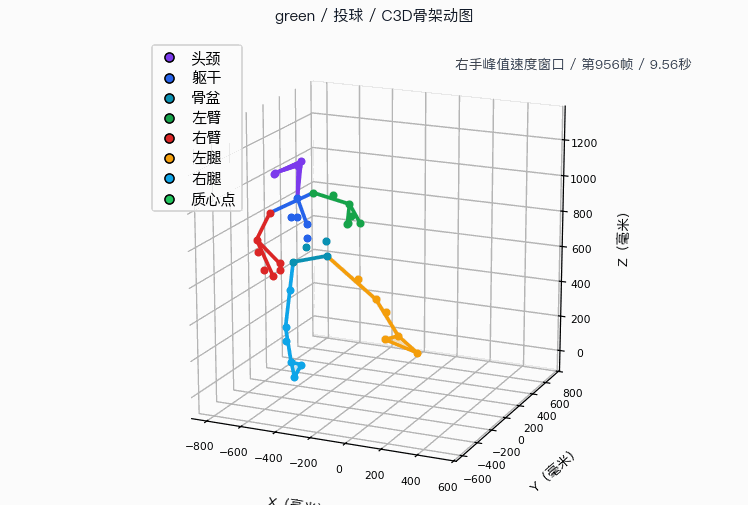
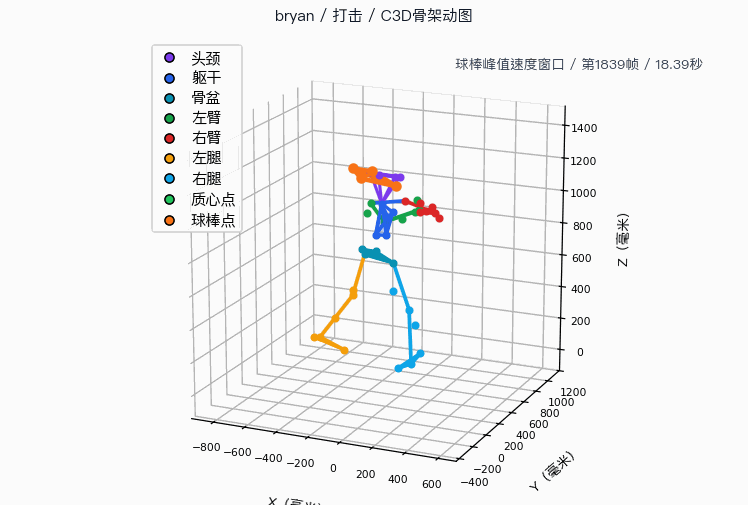
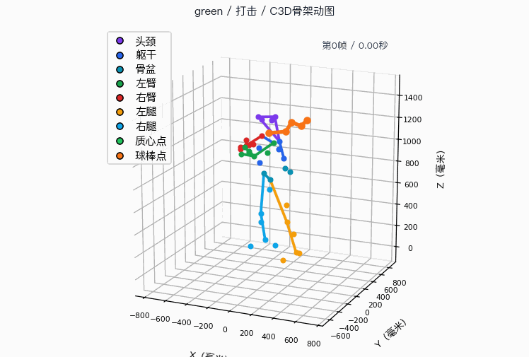

投球六维评分图
怎么看：分数越低越需要优先训练；本次末端加速和身体前移比姿态角度更需要复测关注。
本报告按球员、教练、研究者三类读者拆分，并把投球和打击分开分析。能由当前三维基准数据计算的指标直接呈现；缺少逐帧、雷达枪或真实接触事件的数据，以占位和限制说明呈现。
这一模块只回答孩子和家长最关心的三件事：哪里做得好、哪里要改、接下来练什么。
怎么看：分数越低越需要优先训练；本次末端加速和身体前移比姿态角度更需要复测关注。
和教练参考差距较大，但速度属于估算，先用同机位复测看趋势。
当前身体中心位移不是力板重心，只能作为动作方向参考。
前腿角度和跨步角接近可训练范围，是本次可保持项。


方法：关键帧用于定位动作阶段，三维骨架用于解释髋肩分离、前膝支撑和躯干姿态。
方法：蓝色虚线是球员出手附近三维姿态，绿色是教练出手侧手部速度峰值附近姿态；红色标出当前偏差最大的骨段。
出手帧右肩-右肘-右腕夹角。
出手帧上臂相对躯干轴夹角。
出手帧髋-颈躯干轴相对竖直方向。
跨步落地帧前腿相对地面角度。
出手帧前腿髋-膝-踝夹角。
出手帧肩线与髋线水平夹角；正负表示相对旋转方向。
右腕峰值速度相对正常速度教练；速度类受单目深度抖动影响。
双踝最大水平距离除以估计身高，比 厘米 更适合跨主体对比。
每周三次做跨步停顿投球影子练习，每次三组，每组八次；复测跨步长度和前膝角。
每周三次做髋肩分离慢动作练习，先转胯再带肩；复测髋肩分离和躯干倾斜。
每周两次做毛巾出手练习，只看动作顺序，不追求速度；复测手部速度估算趋势。
怎么看：髋肩分离和挥棒平面是本次打击优先改进项，头部稳定是保持项。


方法：重点看启动、击球点和随挥结束；真实球棒接触点仍需专门事件标注。
当前为视频估算，适合看同流程复测趋势；速度已按画面人体尺度换算为常用单位。
当前为视频估算，适合看同流程复测趋势；速度已按画面人体尺度换算为常用单位。
当前为视频估算，适合看同流程复测趋势；速度已按画面人体尺度换算为常用单位。
当前为视频估算，适合看同流程复测趋势；速度已按画面人体尺度换算为常用单位。
当前为视频估算，适合看同流程复测趋势；速度已按画面人体尺度换算为常用单位。
当前为视频估算，适合看同流程复测趋势；速度已按画面人体尺度换算为常用单位。

怎么看：当前真实可用的是身体三维骨架和手部轨迹估算，尚不能直接等同真实球棒杆身轨迹。
攻击角偏大时，球棒容易从球下方穿过。
身体蓄力不足时，动作容易变成只靠手。
头部稳定分高，是本次打击优势。
每天两组，左右各八次；家长只看肩膀不要抢先。
每次三组，每组八球；让球棒沿水平线穿过击球区。
每次两组，每组十次；挥完保持击球点一秒再抬头。
这一模块聚焦对比、差距、阶段和训练干预，不把队员对比写成医学评价或单一排名。
| 指标 | 球员 | 教练参考 | 差距 | 训练判断 |
|---|---|---|---|---|
| 躯干旋转速度 | 512.8 度/秒 | 566.4 度/秒 | -53.6 度/秒 | 关注 |
| 骨盆旋转速度 | 238.1 度/秒 | 198.6 度/秒 | 39.6 度/秒 | 关注 |
| 髋肩分离 | 54.9度 | 49.6度 | 5.35度 | 需复核 |
| 出手侧手部速度 | 4.98 米/秒 | 12.0 米/秒 | -6.98 米/秒 | 需复核 |
| 跨步长度 | 88.4 厘米 | 116.9 厘米 | -28.5 厘米 | 关注 |
| 重心前移 | 72.2 厘米 | 145.5 厘米 | -73.3 厘米 | 关注 |
| 球速估算 | 15.4 公里/小时 | 暂无 | 暂无 | 需复核 |
怎么看：按差距和训练可改性决定优先级，速度与位移估算必须复测确认。
当前汇总表提供动作开始、出手估算事件和动作结束；抬腿与最大外旋仍需逐帧事件检测。
读法：蓝点是主体投球样本，橙点是同批次对照样本，黑线是教练或建议参考。每一行只比较同一个指标。
怎么看：每个节点下方保留本次可用数值；速度为估算时只看顺序趋势，不直接下绝对速度结论。
打击阶段独立于投球阶段；当前汇总表提供启动、击球点估算和随挥结束，落脚与入区需要球棒轨迹补充。
读法：蓝点是主体打击样本，橙点是同批次对照样本，黑线是光学动作捕捉或建议参考。点越接近参考线，说明该指标越接近参考动作。
横轴代表表现影响，纵轴越靠上代表越应优先训练。
这一模块使用当前三维姿态 CSV 与 vicon_2026 C3D 导出生成逐帧曲线、事件线、质量图和光学动作捕捉校准；不可直接观测的雷达球速和力板重心仍在限制说明中保留。
怎么看：曲线来自投球09三维骨架逐帧计算，黑色虚线为动作开始、出手估算和动作结束事件。
怎么看：速度由三维模型空间坐标逐帧差分估算并换算为公里/小时，用于观察峰值顺序和事件附近变化。
怎么看：曲线来自打击02三维骨架逐帧计算，重点看启动到击球点之间前膝、躯干和髋肩分离的变化。
怎么看：速度由髋部、躯干和出手侧手部轨迹估算；真实球棒杆身速度仍需要球棒检测或光学标记。
| 样本 | 动作 | 指标 | 数值 | 状态 | 来源 |
|---|---|---|---|---|---|
| 投球10 | 投球 | 动作阶段开始 | 0.73 秒 | 需复核 | 三维姿态 |
| 投球10 | 投球 | 关键事件 | 0.80 秒 | 需复核 | 三维姿态 |
| 投球10 | 投球 | 动作阶段结束 | 1.10 秒 | 需复核 | 三维姿态 |
| 投球09 | 投球 | 动作阶段开始 | 0.17 秒 | 需复核 | 三维姿态 |
| 投球09 | 投球 | 关键事件 | 0.33 秒 | 需复核 | 三维姿态 |
| 投球09 | 投球 | 动作阶段结束 | 0.70 秒 | 需复核 | 三维姿态 |
| 打击02 | 打击 | 动作阶段开始 | 2.03 秒 | 需复核 | 三维姿态 |
| 打击02 | 打击 | 关键事件 | 2.47 秒 | 需复核 | 三维姿态 |
| 打击02 | 打击 | 动作阶段结束 | 2.90 秒 | 需复核 | 三维姿态 |
| 打击06 | 打击 | 动作阶段开始 | 4.20 秒 | 需复核 | 三维姿态 |
| 打击06 | 打击 | 关键事件 | 4.47 秒 | 需复核 | 三维姿态 |
| 打击06 | 打击 | 动作阶段结束 | 5.50 秒 | 需复核 | 三维姿态 |
| 样本 | 可用帧 | 关节数 | 时长 | 平均质量 | 来源 |
|---|---|---|---|---|---|
| 投球09 | 53 | 24 | 1.73 秒 | 0.94 | 三维姿态 |
| 投球10 | 76 | 24 | 2.50 秒 | 0.81 | 三维姿态 |
| 打击02 | 137 | 24 | 4.53 秒 | 0.89 | 三维姿态 |
| 打击06 | 220 | 24 | 7.30 秒 | 0.92 | 三维姿态 |
表内统计直接来自三维骨架序列，用于确认本报告已接入真实姿态数据。
| 样本名 | 动作 | 帧数 | 时长 | 有效点比例 | C3D来源 |
|---|---|---|---|---|---|
| bryan | 打击 | 2136 | 21.4 秒 | 97.9% | vicon_2026/bryan/001 Cal 04 Bat 05.c3d |
| bryan | 投球 | 662 | 6.62 秒 | 99.0% | vicon_2026/bryan/001 Cal 04 Pitch 05.c3d |
| green | 打击 | 2089 | 20.9 秒 | 100.0% | vicon_2026/green/006 Bat 04.c3d |
| green | 投球 | 2815 | 28.1 秒 | 88.7% | vicon_2026/green/006 Pitch 09.c3d |
表内统计由 vicon_2026 文件夹中的 C3D 导出直接解析得到，忽略 macOS 资源分叉文件。

怎么看：该图不是全局点云截图，而是从 C3D 关键动作窗口抽帧渲染真实 marker 骨架动图，并标注关键动作帧用于追溯。

怎么看：该图不是全局点云截图，而是从 C3D 关键动作窗口抽帧渲染真实 marker 骨架动图，并标注关键动作帧用于追溯。
怎么看：条形长度综合输入质量分和关节完整率；研究者应优先检查低质量样本的峰值速度和事件点。

怎么看：该图从 C3D 关键动作窗口抽帧渲染真实 marker 骨架动图，并标注球棒峰值速度关键帧；橙色线用于解释 Bat1-Bat5。

怎么看：该图从 C3D 关键动作窗口抽帧渲染真实 marker 骨架动图，并标注球棒峰值速度关键帧；橙色线用于解释 Bat1-Bat5。
光学动作捕捉来自 vicon_2026 C3D 导出；条目名称直接使用 C3D 所在子文件夹名，用于校准和解释视频估算，不直接替代当前视频指标。
当前速度是视频追踪换算值，不等同雷达枪正式球速。
使用源视频分辨率、帧率、画面人体高度，并假设青少年身高一米五五。
当前使用髋部和脊柱中心近似，不是力板重心。
不同来源尚未逐帧同步，只能做解释性参考。
| 样本 | 动作 | 指标 | 数值 | 状态 | 来源 |
|---|---|---|---|---|---|
| 投球10 | 投球 | 动作阶段开始 | 0.73 秒 | 需复核 | 三维姿态 |
| 投球10 | 投球 | 关键事件 | 0.80 秒 | 需复核 | 三维姿态 |
| 投球10 | 投球 | 动作阶段结束 | 1.10 秒 | 需复核 | 三维姿态 |
| 投球10 | 投球 | 髋肩分离 | 8.54度 | 良好 | 三维姿态 |
| 投球10 | 投球 | 前腿膝角 | 126.9度 | 良好 | 三维姿态 |
| 投球10 | 投球 | 躯干倾斜 | 18.9度 | 良好 | 三维姿态 |
| 投球10 | 投球 | 重心转移 | 暂无 | 不可用 | 暂无来源 |
| 投球10 | 投球 | 头部稳定 | 92.9% | 需复核 | 三维姿态 |
| 投球10 | 投球 | 发力侧 | 暂无 | 需复核 | 三维姿态 |
| 投球10 | 投球 | 前侧脚 | 暂无 | 需复核 | 三维姿态 |
| 投球10 | 投球 | 肘部弯曲 | 68.1度 | 良好 | 三维姿态 |
| 投球10 | 投球 | 上臂外展 | 143.6度 | 良好 | 三维姿态 |
| 投球10 | 投球 | 跨步角 | 29.4度 | 需复核 | 三维姿态 |
| 投球10 | 投球 | 跨步长度 | 0.64 身高比 | 需复核 | 三维姿态 |
| 投球10 | 投球 | 前脚方向 | 30.9度 | 需复核 | 三维姿态 |
| 投球10 | 投球 | 手腕翻转 | 13.1度 | 需复核 | 三维姿态 |
| 投球10 | 投球 | 手臂速度 | 需标定 | 需复核 | 三维姿态 |
| 投球10 | 投球 | 手部速度 | 需标定 | 需复核 | 三维姿态 |
| 投球10 | 投球 | 球速估算 | 约15.1 公里/小时 | 需复核 | 二维球追踪 |
| 投球09 | 投球 | 动作阶段开始 | 0.17 秒 | 需复核 | 三维姿态 |
| 投球09 | 投球 | 关键事件 | 0.33 秒 | 需复核 | 三维姿态 |
| 投球09 | 投球 | 动作阶段结束 | 0.70 秒 | 需复核 | 三维姿态 |
| 投球09 | 投球 | 髋肩分离 | 7.24度 | 良好 | 三维姿态 |
| 投球09 | 投球 | 前腿膝角 | 139.4度 | 良好 | 三维姿态 |
| 投球09 | 投球 | 躯干倾斜 | 13.4度 | 良好 | 三维姿态 |
| 投球09 | 投球 | 重心转移 | 暂无 | 不可用 | 暂无来源 |
| 投球09 | 投球 | 头部稳定 | 73.2% | 需复核 | 三维姿态 |
| 投球09 | 投球 | 发力侧 | 暂无 | 需复核 | 三维姿态 |
| 投球09 | 投球 | 前侧脚 | 暂无 | 需复核 | 三维姿态 |
| 投球09 | 投球 | 肘部弯曲 | 92.0度 | 良好 | 三维姿态 |